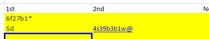

This app is an interface to allow data entry on android phones for the Tennis Abstract match charting project. It tries to make match entry as intuitive and convenient as possible. If you are already familiar with charting matches using the excel sheet, just read the "Quick Start" section - you should be able to learn this app very easily. If you are not familiar with the charting project yet, please consider reading this entire document so that you understand the underlying principles of the system.
The basic idea of this app is to "enter what you see". That is, an action in the match will generally correspond to a similar tap or gesture in a similar location on the screen. You'll notice that there are lines drawn on the screen which match the lines on the court. These serve as guides for entering court location.
To begin, tap "Chart New Match". Then, fill in the info for the match. You'll want to make sure both the players' handedness and the "first server is near/far from the camera" are set correctly, as these settings will affect the point entry interface. If you get the near/far setting wrong, or the players fail to change sides correctly, you can always change it from the long-press action screen.
Put your phone in landscape orientation to enter points. I recommends holding it either with one hand (entering points with the other), or with both hands like a video game controller (entering points with your thumbs.)
Enter the serve first as prompted, followed by shot type, then shot location, and so on. Simple shots are just a tap, more complicated shots are a simple gesture. Read the instructions on each screen for your options. To end the point, just long-press. You can long press anywhere and at any time to access the point-end/other-actions screen. You'll want to start slow to get the hang of the system, but eventually you should be able to enter points as fast as they are played without looking at the screen.
This app supports direct entry of nearly every possible situation covered by the charting format. You can also edit the point in textual form on the point end screen. Unusual situations, such as retirements and penalties, are covered via the "More..." menu.
To pause charting, just exit. To continue it later, just find and tap the match under "Review Matches," then tap "Continue Match" - you'll pick up where you left off.
Once you finish a match, you'll be prompted to send it off for processing using your email account. All complete matches are also saved as csv files under "tennis-charting" on your device should you need to access them later.
If you have any questions about the app or suggestions for improvement, please feel free to contact me (Brian) at brianh32@gmail.com, or hit me up on twitter @rabbitsblinkity. The source for the app is currently at https://github.com/bhrebec/tennis-charting-android, and the permanent home page for the app is at http://www.inklily.com/apps/tennis-charting
Also, if you or someone you know would use an iphone/ipad version, do let me know; I'll make one if there's enough interest!
Happy charting!
(NB: These are the instructions from the excel sheet.)
MatchChart is a tool for keeping detailed records of each point in a tennis match, which allows for unique insights both during and after the match.
Every individual shot, including serves, is coded.
Numbers are used to indicate direction and depth, while letters are used to specific shot types (e.g. "f" stands for "forehand") and error types ("n" stands for "net").
A few symbols are used for other purposes, such as types of errors (e.g. "@" means "unforced error" and "+" indicates an approach shot).
If the first serve goes in, the entire point is coded in the "1st" cell. If the first serve goes out, only the first serve (its direction and error type) is entered in the "1st" cell. Then the 2nd serve and rally are entered in the "2nd" cell.
See the two example points shown below. In the first point, the first serve lands in ("6") and the ensuing rally ("f27b1*") is entered immediately after. In the second point, the first serve is a fault ("5d"). The second serve lands in ("4") and the rally ("s39b3b1w@") is entered along with it in the "2nd" column. Keep reading to learn what all these numbers, letters, and symbols actually mean!
For each serve, use a number to indicate direction: Direction: 4 = out wide, 5 = body, and 6 = down the T. (These numbers are the same in both the ad and deuce courts.) The number 0 (zero) can be used if you don't know the direction.
If the serve is a fault, a lowercase letter to indicate the type of fault. There are five types of faults:
n = net (anything that goes into the net, including net cords that are not lets)
w = wide (in either direction)
d = deep
x = both wide and deep
* g = foot faults
You may also use the letter 'e' to designate an unknown type of fault (for instance, if you didn't see it, or the TV camera cut away). In rare cases when players shank a serve, use "!" to indicate a shank, rather than the letter to indicate the type of error.
When the server commits a time violation and loses his first serve, the code is 'V' (uppercase).
Finally, while this is not necessary, you may record let serves. The letter for this is "c" and it can be repeated as many times as there are lets.
There is also an optional code ("+") to indicate serve-and-volley attempts. This can be used whether or not the serve goes in. For example, a serve-and-volley attempt on which a wide serve lands deep would be coded as "4+w". If the serve lands in, start with the direction and the plus sign, then follow with the rally code, as shown below.
There are four categories for points that never progress past the serve:
Aces. Add a * to the serve notation, and leave the rally field blank. For instance, "5*" denotes a body serve ace. Unreturnables. Same as aces, only use a #. So "6#" is a serve down the T that the other player touches but cannot return. (More on this in a moment.) Forced errors. Code the return as shown below (in 'Rally Sequence') along with the forced error notation ('#'). Example: 6f# Unforced errors: Code the return as shown below, along with the unforced error notation ('@'). Example: 6f2d@
As a general rule, "unreturnables" are points where the returner fails to get a full racquet on the ball (including shanks), fails to get the return all the way to the net, or wildly misses. All other returns are forced or unforced errors. Differentiating between forced and unforced errors on the service return will always be a prickly subject. Very generally speaking, first-serve return errors are usually forced, and second-serve return errors are often unforced. However, especially in the men's game, many second-serve return errors are forced.
Each shot after the serve (with the exception of service returns and point-ending "forced" errors--more on that in a minute) requires two characters: a letter to indicate the type of shot and a number for the direction.
Here are the letters to indicate shot types. Note that for most types of shots, there are different letter codes for the forehand and backhand sides.
b = backhand groundstroke (excluding slices, chips, etc.)
r = forehand slice (including defensive chips, but not drop shots)
s = backhand slice (including defensive chips, but not drop shots)
v = forehand volley
z = backhand volley
o = standard overhead/smash
p = "backhand" overhead/smash
u = forehand drop shot
y = backhand drop shot
l = forehand lob
m = backhand lob
h = forehand half-volley
i = backhand half-volley
j = forehand swinging volley
k = backhand swinging volley
t = all trick shots, including behind-the-back, between-the-legs, and "tweeners."
q = any unknown shot
Here are the numbers to indicate direction: 1 = to a right-hander's forehand side / left-hander's backhand side 2 = down the middle of the court * 3 = to a right-hander's backhand side / left-hander's forehand side
"Down the middle" represents a little more than one third of the court. While we shouldn't worry about excessive precision, it may be helpful to think of "2" as representing the middle 40% of the court, while 1 and 3 each represent an outer 30%. It may be easier to think of a "down the middle" shot as a typical rallying shot, even though it may require the other player to move a step or two in either direction.
As with serves, you can also use the number zero (0) to indicate unknown direction.
Shot direction is not required, and when you first start charting matches, I recommend you stick with the shot-type codes. Eventually, work on adding the shot direction, as it opens up a much wider range of analysis.
Winners: Code the rally as shown above, and add a * (star/asterisk) to indicate a winner. example: f3* = forehand winner down the line
Errors: Code the rally as shown above, including the shot that the loser tried to make. Add one of the error types (same as those for serves: n = net, w = wide, d = deep, x = wide and deep, ! = shank, e = unknown) to the end of the final shot. Finally, add one of these two characters at the end: @ = unforced error, and # = forced error.
In the case of a rally-ending error, you can use up to four keystrokes to describe the error shot: shot-type (e.g. 'f') / direction (e.g. '1') / error type (e.g. 'n') / forced or unforced (e.g. '#')
For unforced errors, shot-type, error type, and the unforced symbol ("@") are required; direction (as on other shots after the serve) is optional. For forced errors, only shot-type and the forced error symbol ("#") are required. For example, "b#" is acceptable. If you wish to add more information (e.g. "b3d#"), that's fine too.
Example: f2f1f1v2n@ = forehand down the middle, forehand crosscourt, forehand crosscourt, volley down the middle into the net (unforced error).
Remember that the rally shot sequence is entered in the same cell as the serve that landed in, so the full entry will look like this: 5f2f1f1v2n@ = body serve, followed by the rally described above.
Return depth is very important, so when service returns are in, we add one additional character to indicate depth. 7 = within the service boxes. 8 = behind the service line, but closer to the service line than the baseline. 9 = closer to the baseline than the service line.
Thus, service returns require three keystrokes: (1) the type of shot, (2) the direction of the shot, and (3) the depth of the shot.
Example: f37 = forehand service return to a (righty) opponent's backhand side that lands in front of the service line.
Be careful not to stop and think about this one--the rally will pass you by! You can always use 0 (zero) for unknown depth or omit a number for depth altogether. Like shot direction, this is optional, but really, really nice to have!
For the most part, the shot codes indicate court position. If a player must return a drop shot, or hits a volley, swinging volley, or smash, he or she probably came to the net. If not, probably not. However, we may want to be more precise.
To indicate that a shot was an approach shot, add a plus sign ("+") immediately after the shot code. For instance, "b+2" is a backhand approach down the middle. This not only helps us identify net approaches, but it also allows us to identify passing shots and passing shot attempts. As mentioned above, the plus sign also indicates serve-and-volley attempts, so for instance, "4+b27v1*" is a point in which the serve was wide, the server followed it into the net, the returner hit a shallow reply, and the server finished the point with a volley winner.
Volleys, half-volleys, swinging volleys, and smashes are assumed to have taken place at the net. Groundstrokes, slices, drop shots, lobs, and trick shots are assumed to be baseline shots. Use "-" and "=" immediately after the shot code to indicate otherwise. "-" means that a shot took place at the net, and "=" that it took place at the baseline. Examples: "f-1" = forehand to a (righty) opponent's forehand that took place near the net; "o=2" is a smash down the middle, hit from near the baseline .
Finally, a semi-colon can be added to any shot to indicate that it clipped the net cord. For example, "f;1*" is a forehand winner to a (righty's) forehand side that hit the net cord.
As with the other optional parts of this system, your chart can be analyzed without the use of these four codes. Court position is great to have, but it's the lowest priority of anything discussed up to this point.
If for some reason you miss a point or two, that's ok. Entering 'S' in the 1st serve column will give that point to the server; 'R' gives the point to the returner.
If you miss several points and are unsure of the sequence … go ahead and guess. Add a note in column P to acknowledge the missing information.
One uncommon event of importance is the point penalty. If, for whatever reason, a point penalty is levied on either player, use a single character code in the cell for first serve. P = point penalty against the server, and Q = point penalty against the returner.
For now, this system ignores challenges and other overrules. If a point is replayed from the beginning, simply delete the uncounted point and start over. If a challenge affects the result of a point, adjust what you've recorded to reflect the result of the challenge.
Finally, there is a 'Notes' column available for your use. For now, that's a catchall for everything that doesn't fit elsewhere. Challenges, medical timeouts, rain delays, WTA on-court coaching, time violation warnings--anything you think is worthy of mention, put it here. There's no pre-set format, but please avoid using commas in this column.
As a general rule, if something happens between points (say, a medical time out, which follows the end of a game), record it in the notes column of the preceding point.
When you start learning this system, progress will be slow for a little while. Try charting pre-recorded matches (there are lots of them on YouTube, for instance) and expect to use the pause and rewind buttons frequently.
At first, ignore shot direction. Stick to the shot types themselves to make sure you learn the shot codes, error indicators (@ and #) and error codes. Next, incorporate shot direction (1, 2, and 3). When you first include direction, I strongly recommend charting a match with two righties--no matter how much you love Rafa or Petra. Once you're comfortable with shot direction, try to add return depth (7, 8 and 9). This is probably the hardest part of the process, because you must code the serve and the three-keystroke return in such a short amount of time. Finally, include court position notations, for approach shots and other shots that take place in unusual court positions, such as baseline smashes.
With some practice, you should be able to chart a match in real time.
The biggest obstacle to doing so is simply thinking too much. If you stop to consider whether a groundstroke was down the middle or crosscourt, you'll miss the next shot. This is
particularly dangerous on the serve return. Don't be afraid to use the code for unknown direction ("0") or omit it entirely.
Note that this system includes "unknown" codes for just about every step of the process. If you miss the direction of a serve or shot, use "0." If you miss the type of shot, use "q." If a shot is out but you don't know in which direction, use "e." If you miss an entire point, use "R" (if the returner won) or "S" (if the server won).
Sometimes broadcasts force you to use these notations. Networks will return to a match when the first point of a game is in progress, while others will occasionally keep the camera on the server throughout an entire point. Unfortunately, some match charts will always be a bit incomplete. However, having 95% of the data from a match is usually sufficient to identify patterns and tendencies, and 95% is way better than nothing.
Please contact me (jeffsackmann@gmail.com) with any questions or suggestions.